Games, maps and randomness
George Barmpalias
Chinese Academy of Sciences
NanKai, October 2025
Overview
-
Games and randomness
- Allocations and Tree-embeddings
- Enumeration games
- Applications to algorithmic information
-
Inversions of functions
- Types of inversion and hardness
- Degrees of unsolvability of inversions
- Oneway functions and their strength
-
Progress and problems
Games with strings
The prefix $\preceq$ relation $\twomel$, $\omel$ gives them a tree structure.
- $\twomel$ is the set of binary strings
- $\omel$ is the set of strings natural numbers
The weight of a set $Q$ of strings is given by
$$\sum_{\sigma\in Q} 2^{-|\sigma|}.$$
A set of strings is prefix-free if no string in it is a prefix of another one.
- $\Pone$ denotes player 1
- $\Ptwo$ denotes player 2
Kraft game (binary)
Offline game
- $\Pone$ picks a sequence $n_i, i < k $ of numbers with $\sum_{i< k} 2^{-n_i}\leq c$
- $\Ptwo$ needs to pick an antichain $\sigma_i, i< k$ in $\twomel$ with $|\sigma_i|=n_i$
$\Ptwo$ has a winning-strategy iff $c\leq 1$.
Onine game. At each stage s:
- $\Pone$ produces a number $n_s$ such that $\sum_{i\leq s} 2^{-n_i}\leq c$
- $\Ptwo$ produces $\sigma_s$ with $|\sigma_s|=n_s$ and $\sigma_i, i\leq s$ is an antichain.
$\Ptwo$ has a winning-strategy iff $c\leq 1$.
Kraft Tree-games
Requests for strings have a tree-structure.
A splice-map is a map from $Q\subseteq\twomel$ to $S\subseteq\omel$ which is
length-preserving and order preserving.
In this case we say that $Q$ is a splice of $S$ and
- the $\sigma\in Q$ that map to $\tau\in S$ are copies of $\tau$ in $Q$.
Weak embeddings of $S\subseteq \omel$ in $\twomel$ that preserve length.
Kraft Tree-game
Offline
- $\Pone$ picks $S\subseteq\omega^{<\omega}$ of weight $\leq w$
- $\Ptwo$ has to give a splice of $S$ in $\twomel$.
Online
Players enumerate $S\subseteq\omel$, $Q\subseteq\twomel$: at each stage s:
- $\Pone$ enumerates $S\subseteq\omega^{<\omega}$ of weight $\leq w$.
- $\Ptwo$ needs to maintain a splice $Q$ of $S$ in $\twomel$.
$\Ptwo$ wins $Q$ is a splice of $S$.
In the Kraft tree game, $\Ptwo$ has a winning strategy iff $w\leq 1$.
Information measures assign a complexity value to each string.
- Kolmogorov complexity (universal but incomputable)
- Time-bounded Kolmogorov complexity (computable).
If $I$ is a computable information measure, for every $x$ there is:
- an algorithmically random real $z$ which computes $x$
- the first $I_n(x)$ bits of $z$ determine the first $n$ bits of $x$.
If $I$ is computably enumerable $I_n(x)+\log n$ bits of $z$ suffice for $x\restr_n$.
Kraft Tree-game variations
- dynamically restricted space for $\Ptwo$
- dynamic shrinking of the strings of $\Pone$
These correspond to results for:
- coding into algorithmically random reals
- compressing down to the information content for (noncomputable) enumerable information measures
Disk game: collisions
- tight-coding: $n$-bits to $n$-bits
- every prefix of each string is coded
- contaminated space but we allow $O(1)$ collisions
- list-decoding
Enumeration games
In each round:
- $\Pone$ picks $k$ numbers
- $\Ptwo$ picks an even number between the min and max of the $k$ numbers.
Both choices are without repetition:
- $\Pone$ cannot choose a number that he has chosen in previous stages
- $\Ptwo$ cannot choose a number that he has chosen in previous stages.
Winning condition
- $\Pone$ wins at a stage where $\Ptwo$ is unable to make a move
- $\Ptwo$ wins if he has a legitimate move at each stage.
Who wins? This is open for $k>3$.
References for games
Allocation games
- Game interpretation of Kolmogorov complexity. Muchnik et al.
- The Kraft-Barmpalias-Lewis-Pye Lemma revisited. A. Shen
- Compression of data streams to their information. Barmpalias & Lewis-Pye.
- Optimal redundancy in computations from random oracles. Barmpalias & Lewis-Pye.
- Compression of enumerations and gain. Barmpalias, Zhang, Zhan.
Martingale games
- Granularity of wagers in games and the possibility of savings. Barmpalias, Fang.
- Monotonous betting strategies in warped casinos. Barmpalias, Fang, Lewis-Pye.
- Irreducibility of enumerable betting strategies. Barmpalias & Liu.
Hardness of inverting functions
The security of modern cryptographic protocols is based on the (assumed) hardness of certain computational problems.
Central in computational complexity is the notion of oneway functions:
finite maps that are easy to compute but hard to invert.
Oneway functions are used to make security protocols hard to break (hash maps).
Their existence is unknown: fundamental problem in computational complexity and modern cryptography.
Levin (2022) extended oneway maps to the reals and asked whether they exist.
Effective functions on the reals
This is a standard notion in computable analysis due to Turing (1936).
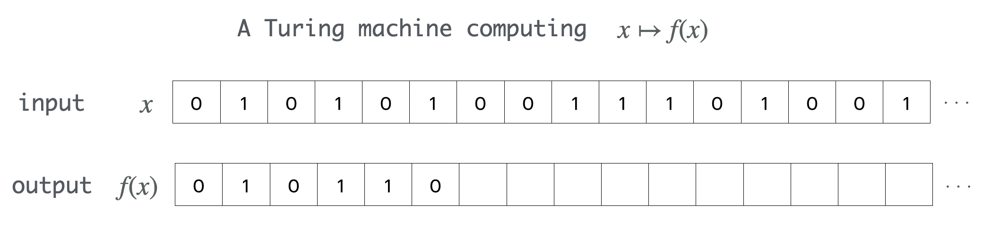
Computability of real functions is effective continuity:
- computable real functions are continuous
- every continuous real function is computable in some oracle
Probability and measure
Uniform measure on $2^{\omega}$ or Lebesgue measure on $[0,1]$.
A set of reals is positive if it has positive measure.
A function is positive is it maps every positive set to a positive set.
A property holds almost everywhere if it holds on a set of measure 1.
A a property $P$ of functions holds for almost all functions in a given class $\mathcal{C}$ if
for almost all $w$ the property holds for all $g\leq_T w$ in $\mathcal{C}$.
Properties of interest: total, surjective, injective, collision-resistant.
Inversions and Collisions
We say that $g$ inverts $f$ on $y$ if $f(g(y))= y$.
If $I_g$ is the set of reals where $g$ inverts $f$ we say that:
- $g$ fully inverts $f$ if $I_g= f(\twome)$
- $g$ positively inverts $f$ if $I_g$ or $f\inv(I_g)$ is positive.
$f$ is effectively invertible on $y$ if $y$ computes a member of $f\inv(y)$.
We say that $g$ computes an $f$-collision on $x$ if $f(x)=f(g(z))$.
Complexity of inversion
There is no degree bound, even for total functions.
There is a total computable positive surjection $f$
which has no continuous full inversion.
Total computable injections have computable inverses.
If a total computable $f$ is injective on $R$ then $f:R\to 2^{\omega}$ is effectively invertible.
Inversion-hardness from non-injectivity and partiality (domain complexity).
Oneway functions and collision-resistance
Avoid: functions that map all positive sets to null sets do not qualify.
A positive partial computable function $f$ is
oneway if almost all functions fail to invert $f$ almost everywhere.
- Collision-resistance is hardness of computing collisions
- Avoid: functions that are injective on a positive set.
We say $f$ is collision-resistant if it is almost nowhere injective
and almost all functions fail to compute $f$-collisions almost everywhere:
$$\textrm{$f(x)\neq f(h(x))$ for almost all $h, x$ with $h(x)\neq x$.}$$
Oneway and degrees of unsolvability
$f$ is oneway iff $f(g(y))\neq y$ for almost all functions $g$ and reals $y$.
Zero-one law. If $f$ is not oneway then:
- almost all oracles can invert $f$ on almost all $y$.
- almost all oracles can compute a positive inversion of $f$.
Non-oneway maps are almost everywhere constant up to degree:
- not oneway: $f(x)\oplus z \equiv_T x\oplus z$ for almost all $z$, $x$
- not $0'$-oneway: $f(x)'\oplus z \equiv_T x'\oplus z$ for almost all $z, x$
Oneway and algorithmic randomness
A real is random if it is not a member of any null definable $G_\delta$ set.
The choice of definability determines the strength of the randomness notion.
Randomness with respect to $\Pi^0_2$ sets suffices for us.
Say $f$ is random-preserving if $f(x)$ is random for each random $x$.
A partial computable $f$ is positive iff it is random-preserving.
Randomized computations
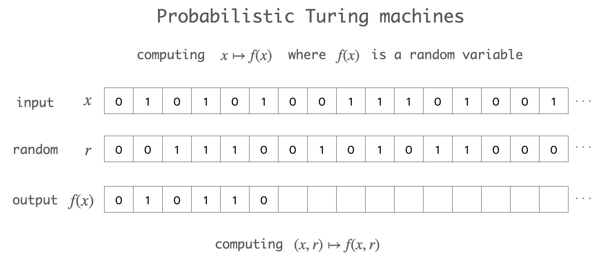
Randomized computations can occasionally be replaced by deterministic ones.
Probabilistic inversions and collisions
Given $f, g:\subseteq 2^{\omega}\to 2^{\omega}$ we say that $g$ is a
probabilistic inversion of $f$ if
$$\hspace{0.1cm}\mu(\sqbrad{(y,r)}{f(g(y,r))=y})>0$$
A partial computable random-preserving function $f$ is
- oneway if it has no effective probabilistic inversion.
- collision-resistant if no $(x,z)$ with $f(x)=f(z)$ is probabilistically computable.
The following are equivalent:
- almost all oracles compute a positive inversion of $f$
- there is an effective probabilistic inversion of $f$.
Existence of oneway functions
A partial shuffle of the input bits based on an enumeration of $0'$ is oneway.
There is a total linear-time computable oneway surjection $f$
such that any probabilistic inversion of $f$ computes $0'$.
The unused bits in a shuffle make collisions easy to find, probabilistically.
There is a total poly-time computable collision-resistant oneway surjection.
Collision-resistance is achieved by effective perturbation of the output (hashing).
Ko and Friedman (1980s): Time complexity for real functions.
Strength of oneway - new results
Gauged by the oracles that probabilistically invert them.
If $f$ is a positive partial computable function then
- $f$ has a positive inversion $g\leq_T 0''$ (not optimal)
- if $f$ is total it has a positive inversion $g\leq_T 0'$ (optimal)
If $f$ is a positive partial computable function then
$f$ has a probabilistic inversion $g\leq_T 0'$ (optimal).
The maximum strength of total and partial oneway functions is $0'$.
Positive inversions harder than probabilistic
There is a partial computable $f:\subseteq\twome\to\twome$ which is
- positive and nowhere effectively invertible
- a.e. probabilistically invertible.
Oracle $0''$ can positively invert every positive effective $f$ but $0'$ cannot:
There is an effective positive $f$ which is probabilistically
invertible but has no positive inversion $\leq_T 0'$:
restrict $x\oplus z\mapsto z$ to a complex positive $\Pi^0_2$ class.
Classify the complexity of positive inversions: I think close to $0'$ (in-progress:).
Our oneway is a shuffle
A shuffle $f:\twome\to\twome$ is given by a computable injection $(a_i)\in\omega^{\omega}$ and
$$
f(x)(i):=x(a_i).
$$
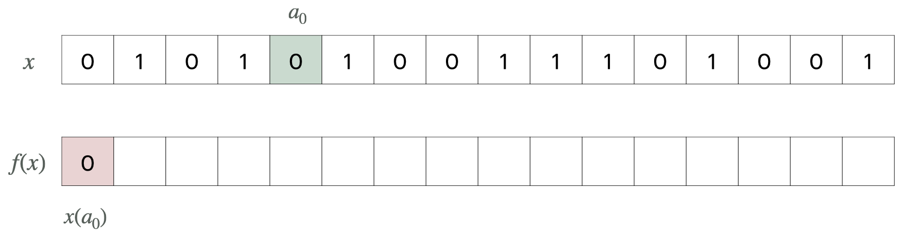
Shuffle maps on the reals
A shuffle $f:\twome\to\twome$ is given by a computable injection $(a_i)\in\omega^{\omega}$ and
$$
f(x)(i):=x(a_i).
$$
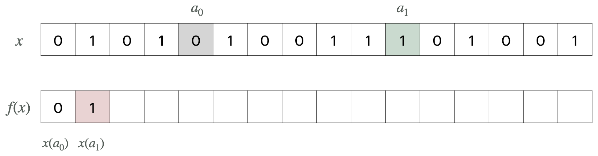
Shuffle maps on the reals
A shuffle $f:\twome\to\twome$ is given by a computable injection $(a_i)\in\omega^{\omega}$ and
$$
f(x)(i):=x(a_i).
$$
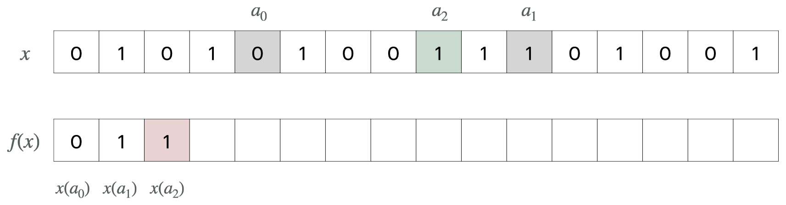
Shuffle maps on the reals
A shuffle $f:\twome\to\twome$ is given by a computable injection $(a_i)\in\omega^{\omega}$ and
$$
f(x)(i):=x(a_i).
$$
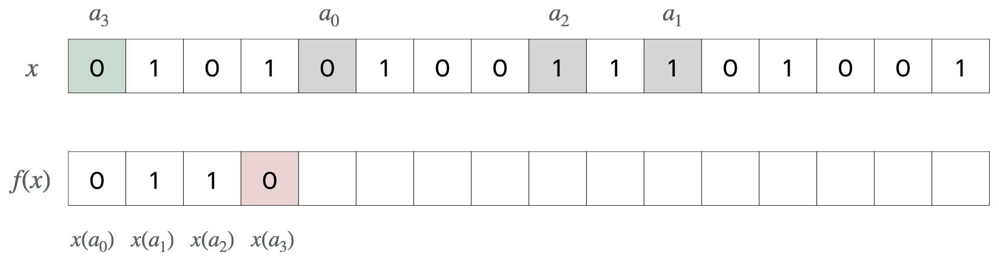
Shuffle maps on the reals
A shuffle $f:\twome\to\twome$ is given by a computable injection $(a_i)\in\omega^{\omega}$ and
$$
f(x)(i):=x(a_i).
$$
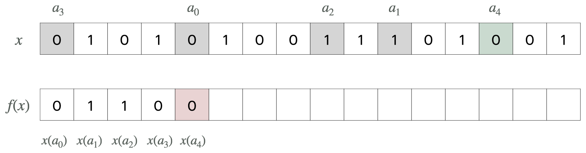
Shuffle maps on the reals
Let $(a_i)$ be a computable enumeration of a noncomputable set.
The $(a_i)$-shuffle has the following properties:
- it is a total computable positive surjection
-
strongly non-injective
- all inverse images are uncountable
- every injective restriction of it has null domain
- every probabilistic inversion of it computes $\sqbrad{a_i}{i\in\omega}$.
Take $(a_i)$ be a computable enumeration of $0'$.
Hashing the shuffles
The idea is to XOR the shuffle output with "random" bits.
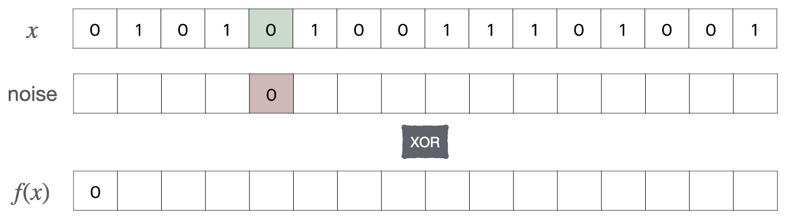
A hash-shuffle $f:\twome\to\twome$ is given by
$$
f(x)(i):=x(a_i)\otimes \texttt{noise}(i)
$$
where $(a_i)$ is a computable enumeration of $A$ without repetitions.
Hashing the shuffles
The idea is to XOR the shuffle output with "random" bits.
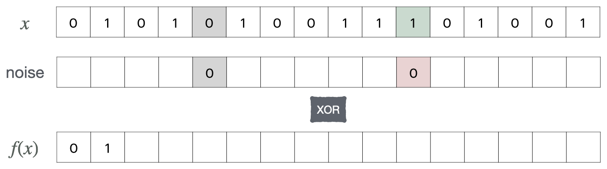
A hash-shuffle $f:\twome\to\twome$ is given by
$$
f(x)(i):=x(a_i)\otimes \texttt{noise}(i)
$$
where $(a_i)$ is a computable enumeration of $A$ without repetitions.
Hashing the shuffles
The idea is to XOR the shuffle output with "random" bits.
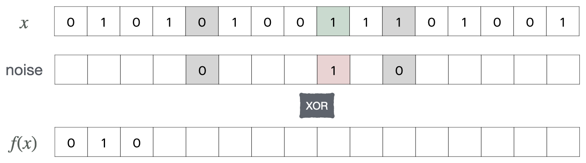
A hash-shuffle $f:\twome\to\twome$ is given by
$$
f(x)(i):=x(a_i)\otimes \texttt{noise}(i)
$$
where $(a_i)$ is a computable enumeration of $A$ without repetitions.
Hashing the shuffles
The idea is to XOR the shuffle output with "random" bits.
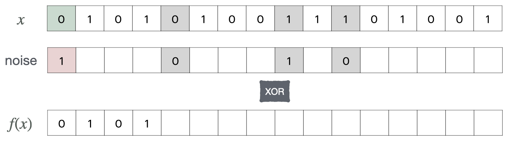
A hash-shuffle $f:\twome\to\twome$ is given by
$$
f(x)(i):=x(a_i)\otimes \texttt{noise}(i)
$$
where $(a_i)$ is a computable enumeration of $A$ without repetitions.
Hashing the shuffles
The idea is to XOR the shuffle output with "random" bits.
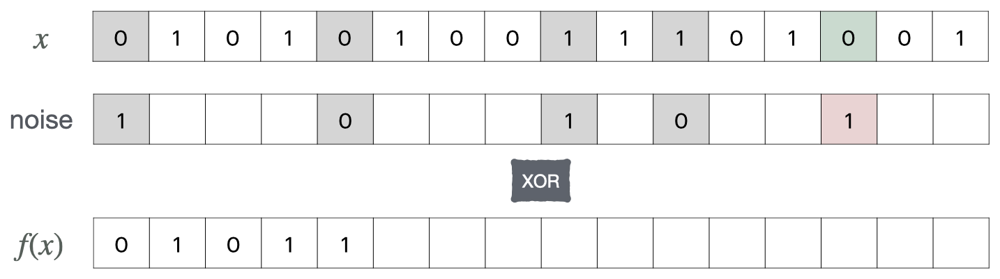
A hash-shuffle $f:\twome\to\twome$ is given by
$$
f(x)(i):=x(a_i)\otimes \texttt{noise}(i)
$$
where $(a_i)$ is a computable enumeration of $A$ without repetitions.
References for oneway functions
- Zermelo-Fraenkel Axioms, Internal Classes, External Sets - Levin
[ArXiv 2209.07497]
- Computable oneway functions on the reals -
[Arxiv 2406.15817]
- Complexity of inversion of functions on the reals -
[Arxiv 2412.07592]
- Collision-resistant hash-shuffles on the reals -
[Arxiv 2501.02604]